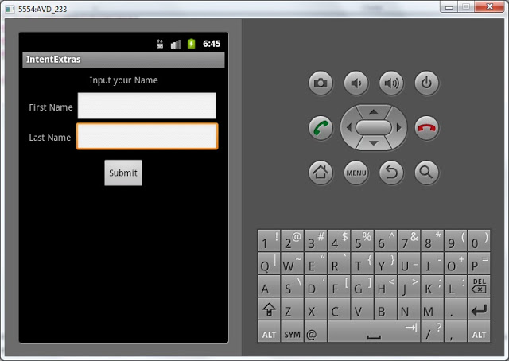
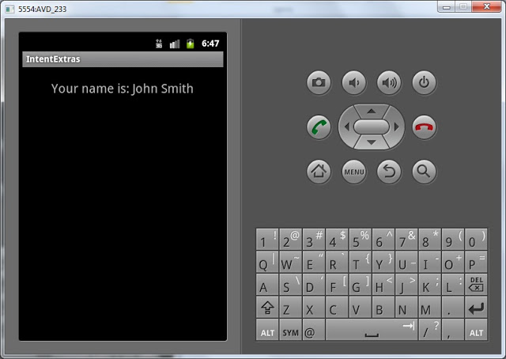

В этом уроке:
- передаем данные с помощью Intent
На прошлых урокам мы узнали, что такое Intent и как им пользоваться. Из одного Activity мы просто вызывали другое, передавая action. Теперь научимся передавать данные. Сделаем простейшее приложение. На первом экране мы будем вводить наше имя и фамилию, а второй экран будет эти данные отображать. Передавать данные будем внутри Intent.
Создадим проект:
Project name: P0281_IntentExtras
Build Target: Android 4.0
Application name: IntentExtras
Package name: ru.startandroid.develop.p0281intentextras
Create Activity: MainActivity
Открываем main.xml и рисуем экран с полями и кнопкой отправки:
<?xml version="1.0" encoding="utf-8"?>
<LinearLayout
xmlns:android="http://schemas.android.com/apk/res/android"
android:layout_width="fill_parent"
android:layout_height="fill_parent"
android:orientation="vertical">
<TextView
android:layout_width="fill_parent"
android:layout_height="wrap_content"
android:layout_marginTop="10dp"
android:gravity="center_horizontal"
android:text="Input your Name">
</TextView>
<TableLayout
android:id="@+id/tableLayout1"
android:layout_width="match_parent"
android:layout_height="wrap_content"
android:layout_margin="10dp"
android:stretchColumns="1">
<TableRow
android:id="@+id/tableRow1"
android:layout_width="match_parent"
android:layout_height="wrap_content">
<TextView
android:id="@+id/textView1"
android:layout_width="match_parent"
android:layout_height="wrap_content"
android:text="First Name">
</TextView>
<EditText
android:id="@+id/etFName"
android:layout_width="match_parent"
android:layout_height="wrap_content"
android:layout_marginLeft="5dp">
<requestFocus>
</requestFocus>
</EditText>
</TableRow>
<TableRow
android:id="@+id/tableRow2"
android:layout_width="match_parent"
android:layout_height="wrap_content">
<TextView
android:id="@+id/textView2"
android:layout_width="match_parent"
android:layout_height="wrap_content"
android:text="Last Name">
</TextView>
<EditText
android:id="@+id/etLName"
android:layout_width="match_parent"
android:layout_height="wrap_content"
android:layout_marginLeft="5dp">
</EditText>
</TableRow>
</TableLayout>
<Button
android:id="@+id/btnSubmit"
android:layout_width="wrap_content"
android:layout_height="wrap_content"
android:layout_gravity="center_horizontal"
android:text="Submit">
</Button>
</LinearLayout>В EditText будем вводить имя и фамилию, а кнопка Submit будет вызывать другой экран и передавать ему эти данные.
Пишем код для MainActivity.java:
package ru.startandroid.develop.p0281intentextras;
import android.app.Activity;
import android.content.Intent;
import android.os.Bundle;
import android.view.View;
import android.view.View.OnClickListener;
import android.widget.Button;
import android.widget.EditText;
public class MainActivity extends Activity implements OnClickListener {
EditText etFName;
EditText etLName;
Button btnSubmit;
/** Called when the activity is first created. */
@Override
public void onCreate(Bundle savedInstanceState) {
super.onCreate(savedInstanceState);
setContentView(R.layout.main);
etFName = (EditText) findViewById(R.id.etFName);
etLName = (EditText) findViewById(R.id.etLName);
btnSubmit = (Button) findViewById(R.id.btnSubmit);
btnSubmit.setOnClickListener(this);
}
@Override
public void onClick(View v) {
Intent intent = new Intent(this, ViewActivity.class);
intent.putExtra("fname", etFName.getText().toString());
intent.putExtra("lname", etLName.getText().toString());
startActivity(intent);
}
}Определяем поля ввода и кнопку. Кнопке присваиваем обработчик – Activity (this). Рассмотрим реализацию метода onClick. Мы создаем Intent с использованием класса, а не action. Если помните, с такого способа мы начинали знакомство с Intent. Напомню - это означает, что система просмотрит манифест файл нашего приложения, и если найдет Activity с таким классом – отобразит его. ViewActivity пока не создан, поэтому код будет подчеркнут красным. Это не мешает нам сохранить файл. Чуть позже мы создадим это Activity и ошибка исчезнет.
Итак, Intent создан, смотрим код дальше. Используется метод putExtra. Он имеет множество вариаций и аналогичен методу put для Map, т.е. добавляет к объекту пару. Первый параметр – это ключ(имя), второй - значение.
Мы поместили в Intent два объекта с именами: fname и lname. fname содержит значение поля etFName, lname – значение поля etLName. Остается только отправить укомплектованный Intent с помощью метода startActivity.
Теперь создадим второе Activity. Назовем его ViewActivity.
Создаем для него layout-файл view.xml:
<?xml version="1.0" encoding="utf-8"?>
<LinearLayout
xmlns:android="http://schemas.android.com/apk/res/android"
android:layout_width="match_parent"
android:layout_height="match_parent"
android:orientation="vertical">
<TextView
android:id="@+id/tvView"
android:layout_width="wrap_content"
android:layout_height="wrap_content"
android:layout_gravity="center_horizontal"
android:layout_marginTop="20dp"
android:text="TextView"
android:textSize="20sp">
</TextView>
</LinearLayout>Здесь просто TextView, который будет отображать пришедшие данные.
Создаем класс ViewActivity. И пишем код:
package ru.startandroid.develop.p0281intentextras;
import android.app.Activity;
import android.content.Intent;
import android.os.Bundle;
import android.widget.TextView;
public class ViewActivity extends Activity {
TextView tvView;
@Override
protected void onCreate(Bundle savedInstanceState) {
super.onCreate(savedInstanceState);
setContentView(R.layout.view);
tvView = (TextView) findViewById(R.id.tvView);
Intent intent = getIntent();
String fName = intent.getStringExtra("fname");
String lName = intent.getStringExtra("lname");
tvView.setText("Your name is: " + fName + " " + lName);
}
} Находим TextView, затем получаем Intent и извлекаем из него String-объекты с именами fname и lname. Это те самые значения, которые мы помещали в коде MainActivity.java. Формируем строку вывода в TextView с использованием полученных данных.
Не забудьте прописать ViewActivity в манифесте. На этот раз никаких Intent Filter не нужно, т.к. мы точно знаем имя класса Activity и используем явный вызов.
Все сохраним и запустим.
Видим такой экран:

Заполняете поля как пожелаете. Я напишу John в поле First Name и Smith в поле Last Name.
Жмем Submit:

ViewActivity отобразилось, считало данные из Intent и вывело их на экран.
Поместить в Intent можно данные не только типа String. В списке методов Intent можно посмотреть все многообразие типов, которые умеет принимать на вход метод putExtra.